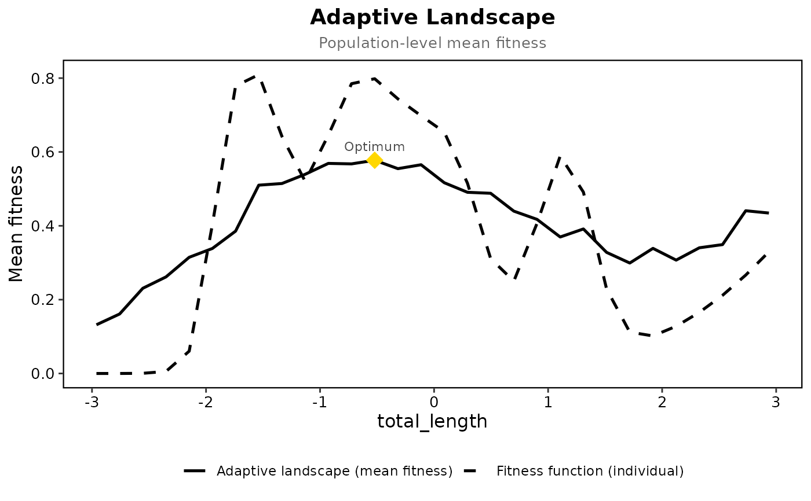

Computes the adaptive landscape (mean fitness as a function of population mean phenotype) using a fitted individual-level fitness model.
Usage
adaptive_landscape(
data,
fitness_model,
trait_cols,
group_col = NULL,
population_variance = NULL,
simulation_n = 1000,
grid_n = 50,
custom_range = NULL,
clamp = TRUE,
support_warn = 0.25
)Arguments
- data
A data frame containing the original trait and fitness data.
- fitness_model
A fitted model object (e.g., GAM or Tps) predicting individual fitness.
- trait_cols
One or two trait column names. With one trait the model is usually the
$modelofunivariate_spline()and the result is a curve; with two it is the$modelofcorrelated_fitness_surface()and the result is a surface.- group_col
Optional character string specifying a grouping variable.
- population_variance
Optional covariance matrix for the traits. Estimated from data if
NULL.- simulation_n
Integer specifying the number of individuals to simulate per grid point. Default is 1000.
- grid_n
Integer specifying the resolution of the population mean grid. Default is 50.
- custom_range
Optional list specifying custom ranges for the traits.
- clamp
Logical; if
TRUE(the default) simulated fitness from a thin-plate model is held inside the range of the fitness type before averaging: 0 to 1 for survival, at least 0 for counts. Continuous fitness is left alone, and a GAM is unaffected because its link already respects the range. The run message says how many values were held.- support_warn
Share of the population simulated at the optimum that may fall outside the data before the optimum is flagged as extrapolated. Default is 0.25.
Value
An object of class "adaptive_landscape". Its
optimum_edge is TRUE when the highest mean fitness lies on
the edge of the grid, where the landscape may keep rising beyond it.
Details
For a single trait the grid also carries .ind_fit, the
individual fitness function evaluated at each population mean, for
drawing the two curves together (see plot_adaptive_landscape()).
The simulated populations spread beyond the data, especially towards the
edge of the grid, and the fitness of those individuals is extrapolated.
.outside in the grid is the
share of each simulated population falling outside the convex hull of the
observed trait pairs, or outside the observed range for one trait, and the
result's support gives that share over the whole grid and at the
optimum.
Examples
prep <- prepare_selection_data(bumpus, "survival", c("total_length", "weight"))
surf <- correlated_fitness_surface(prep, "survival", c("total_length", "weight"), grid_n = 30)
#> Data type: binary; method: gam; n = 136; k = 29
#> GAM fitting with 136 observations
#> Trying formula: main
#> Success with formula: main
#> Predictions range: 0.0472 to 0.703
#> Masked 424 of 900 grid points outside the data
land <- adaptive_landscape(prep, surf$model, c("total_length", "weight"),
simulation_n = 100, grid_n = 15)
#> Population mean grid ranges:
#> total_length: -2.96 to 2.94
#> weight: -3.12 to 4.85
#> Estimated within-population variance-covariance:
#> total_length weight
#> total_length 1.0000 0.5839
#> weight 0.5839 1.0000
#> Calculating mean fitness for 225 grid points
#> Optimal population mean phenotype:
#> total_length weight
#> 8 -0.0123897 -3.121579
#> Mean fitness at optimum: 0.6796
#> The highest mean fitness is on the edge of the grid; the landscape may keep rising beyond it
#> 75% of simulated individuals fell outside the data (99% at the optimum)
#> The optimum rests on extrapolation: more than 25% of the population simulated there lies outside the data
land$optimum
#> total_length weight .mean_fit .outside
#> 8 -0.0123897 -3.121579 0.6795783 0.99
# one trait, from the spline fitness function
uni <- univariate_spline(prep, "survival", "total_length")
#> Fitness type detected: binary
land1 <- adaptive_landscape(prep, uni$model, "total_length", simulation_n = 100, grid_n = 30)
#> Population mean grid ranges:
#> total_length: -2.96 to 2.94
#> Estimated within-population variance-covariance:
#> total_length
#> total_length 1
#> Calculating mean fitness for 30 grid points
#> Optimal population mean phenotype:
#> total_length
#> 15 -0.1140707
#> Mean fitness at optimum: 0.5731
#> 34% of simulated individuals fell outside the data (1% at the optimum)
plot_adaptive_landscape(land1, "total_length")
